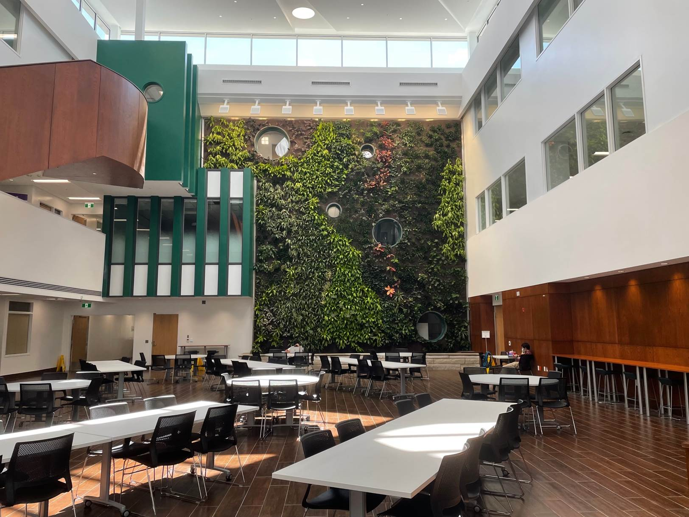
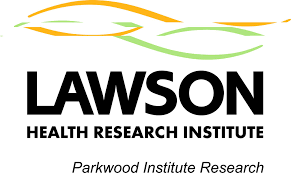

Theme 01
Vascular and Brain Health
We study how vascular function relates to brain health across aging, disease, and everyday physiological change.

Western University
School of Kinesiology
Welcome to the Fitzgibbon-Collins Lab
The Fitzgibbon-Collins Lab at Western University studies how cerebrovascular and cardiovascular health shape the way people think, move, and age across adulthood.
Our work bridges physiology, mobility, cognition, and inclusive research practice to support healthier aging and clinically meaningful discovery.

The Fitzgibbon-Collins Lab is located in the department of Kinesiology at Western University in London, Ontario, Canada.
We study how cerebrovascular and cardiovascular health shape the way people think, move, and age. Our research focuses on the integration of blood flow, brain function, and mobility across adulthood, with the goal of identifying early markers of decline and informing strategies that support healthy aging.
Using advanced physiological, cognitive, and wearable assessment tools, we investigate clinically relevant questions related to gait, balance, executive function, falls risk, and brain health. The lab also emphasizes women’s health, sex-specific aging, and inclusive research practices, recognizing that meaningful science must reflect the diversity of the populations it aims to serve.
At its core, the lab is committed to translational, person-centered research that bridges physiology and function to improve health across the lifespan.
We study how vascular function relates to brain health across aging, disease, and everyday physiological change.
This work explores how movement, cognition, and balance interact to better understand and reduce fall risk.
We prioritize inclusive research approaches that better represent women’s health experiences and diverse participant populations.
Project 1: Investigating links between cerebrovascular regulation and executive function across healthy aging.
Project 2: Examining how gait variability and mobility patterns relate to vascular health markers in older adults.
Project 3: Studying sex-related differences in cardiovascular and brain health trajectories over time.
Project 4: Using wearable sensors to explore balance, falls risk, and real-world movement behavior.
Project 5: Evaluating the relationship between cerebral blood flow, cognition, and functional independence.
Project 6: Identifying early physiological markers associated with mobility decline and reduced quality of life.
Project 7: Exploring how inclusive research methods can improve representation in vascular aging studies.
Project 8: Integrating cardiovascular, cognitive, and mobility assessments to better understand healthy aging across the lifespan.
Research conducted at the Fitzgibbon-Collins Lab is made possible through the assistance of community members who volunteer as research participants. We are always looking for older and younger adults to participate in our research studies as we strive to create new knowledge.
Interested in participating? Fill out this form here: View Form
Join the Lab
If you are passionate about learning more about the brain, can work well both independently and within a team environment and have a second-to-none work ethic...
Then we want to hear from you! Please send a short statement of research interest (why you want to join our group) along with your CV to: lfitzgib@uwo.ca
Principal Investigator
Dr. Laura Fitzgibbon-Collins leads innovative research on how vascular health shapes mobility and cognition across adulthood, with a strong focus on female health, real-world wearable technology, and inclusive research grounded in EDIDA principles.
Graduate Students
For the most up-to-date publications see PubMed or Google Scholar .
2026
Functional and brain activation changes in females with subcortical subacute stroke captured through functional near infrared spectroscopy: a case series. Physiotherapy Theory and Practice. doi.org/10.1080/09593985.2025.2568708
2025
Neurovascular de-coupling underlies dual-task cost across cognitive abilities. Alzheimer’s and Dementia: Translational Research and Clinical Interventions. doi.org/10.1002/trc2.70156
Dynamic cerebral autoregulation in people with mild cognitive impairment. Journal of Cerebral Blood Flow and Metabolism. doi.org/10.1177/0271678X251345361
Special Issue on Women’s Health: Women, orthostatic tolerance, and POTS: a narrative review. Autonomic Neuroscience: Basic and Clinical. Invited review. doi.org/10.1016/j.autneu.2025.103284
Contact
Email: lfitzgib@uwo.ca
Location: Thames Hall Rm. 4168 - Western University
Affiliations
